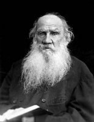

(1828 – 1910)

Roman sanatı denince ilk akla gelenlerden biri 'Rus romanı' ise Rus romanı denince akla ilk gelen yazarlardan biri de Tolstoy'dur. Belki ön adını, doğum tarihini herkes bilmez; ama edebiyatla ilgili herkes, onun adını mutlaka duymuştur. Yazdığı romanlarla klasikler arasına giren yazar, bir yandan da felsefi yazılarında insanın iç dünyasını irdeler.Zengin ve soylu bir aileden gelmesine karşın tüm topraklarını, yanında çalışan köylülere dağıtmıştı.
Dünya edebiyatının zirvedeki isimlerinden olan Rus yazar Lev Nikolayeviç Tolstoy, zengin ve soylu bir ailenin çocuğu olarak 9 Eylül[6] 1828'de Orta Rusya'daki Yasnaya Polyana'da doğdu. Annesi Prenses Marie Volkonsky, babası ise Kont Nicolai İlyiç Tolstoy'du. Çok küçük yaşlarda önce annesini, sonra babasını kaybetti; yakınlarının gözetiminde büyüdü. Çocukluğundan beri gerçekleri incelemeye karşı büyük bir ilgisi vardı. Özellikle babaannesinin evinde bulunan Lev Stapanoviç adlı kör bir hizmetlinin geceleri tüm aileye anlattığı Rus halk öykülerinin Tolstoy'a ilk yazarlık esinlerini verdiğini söylemek mümkündür.[7] Öğrenimini tamamlamak için Moskova'ya gitti. Çalışkan ve zeki bir öğrenci olarak başarı ve sevgi kazandı. Fransızcasını ilerletmiş, Voltaire'i ve J. J. Rousseau'yu okumuş, bu iki yazarın kuvvetli etkisinde kalmıştı. Yasnaya Polyana'ya döndü, yoksul köylüler arasına katıldı.
1844 yılında Türk-Arap edebiyatı okumak üzere Kazan Üniversitesi'ne giren Tolstoy, sonraları hukuk okumaya başladı ve okulun hiçbir bölümünü tamamlamadan, 1847'de oradan ayrıldı. Birkaç yıl serseri ve fahişeler arasında, kumar ve içki içinde geçen serkeş bir hayattan sonra, abisi Nikolay'ın Kafkas ordusunda subay olmasına özenen Tolstoy, yaşam tarzına bir çeki düzen vermek düşüncesiyle orduya girdi ve Kafkasya'ya gitti. Kafkas halkının yoksulluk dolu yaşayışlarını ele aldığı izlenimlerle ilk gerçekçi hikayelerini yazdı. İlk eseri olan Çocukluk da (1852) bunlar arasındaydı. 1854'te, Kırım Savaşı'na subay olarak katıldı. Sonra askerlikten ayrılıp Petersburg'a gitti. Bazı eserlerini, oldukça sakin geçirdiği o yıllarda yazdı. Yine de içinde, aradığını bulamayan bir ruh çalkalanıyordu. 1855'te kardeşi Dimitry ve 1860'da abisi Nikolay'ı verem nedeniyle kaybetmesi üzerine Batı Avrupa ülkelerinde uzun bir gezintiye çıktı. Almanya, Fransa ve İsviçre'de dolaştı. Yurduna dönüşünde yine Yasnaya-Polyana'ya yerleşti. Asalet unvanlarından, lüksten sıkılıyordu. Köyünde bir okul kurdu. Bu okul, eğitim öğretim bakımından yepyeni bir kurumdu. Huzura kavuştuğuna kanaat getirdikten sonra, 1862'de evlendi.
Tolstoy evlendiğinde karısı Sophia Behrs 16 yaşında idi. Bu evlilik onun düzenli bir hayat özlemini giderdi. On iki çocukları oldu; bu çocuklardan beşi öldü. En önemli iki romanı Savaş ve Barış (1869) ile Anna Karenina'yı (1877) bu sıralarda yazdı. Savaş ve Barış romanında geçen "Tüm mutlu aileler aynıdır, ama her mutsuz aile kendi yöntemiyle mutsuzdur" cümlesi adeta Tolstoy'un hayatını özetliyordu. Karısı, eserlerini yazmasında Tolstoy'un en büyük yardımcısıydı. Hatta yazar, Savaş ve Barış'ı karısının önerileri çerçevesinde on kez düzelttikten sonra tamamlamıştır. Aradan bir süre geçince yeniden, bu sefer eskisinden daha şiddetli bir çöküntü yaşadı. Geniş halk yığınlarının, özelikle Rus köylüsünün yoksul, perişan durumu onu çok üzüyordu. Bütün servetini köylülere dağıttığı dönemde özensiz giyiniyor, giydiği her elbiseyi kendisi dikiyordu. Değişmeyen tek tarafı, bıkıp usanmadan yazmasıydı. İtiraflarım (1882), Kreutzer Sonatı (1889), Efendisi ve İnsan (1895) hep bu yılların ürünleridir. Gerçekçi edebiyatın en büyük temsilcilerinden olduğu kadar, bir düşünür ve bir eğitimci olarak da ün kazanmıştı. Ayrıca Gençliğim (1856), Kazaklar (1863), Diriliş (1889), Hacı Murat (1912) gibi romanları da vardır.
Tolstoy ömrünün son yıllarını büsbütün derbeder bir şekilde geçirdikten sonra, bir küskünlük sonucu, evini bırakıp yollara düştü. Astapovo tren istasyonunda ölü olarak bulundu. Ölümüne zatürrenin sebep olduğu bilinmektedir.
Seçme Romanları: Çocukluğum (1852), Gençliğim (1856), Savaş ve Barış (1869 – Engin Yayıncılık, 1999), Anna Karenina (1877 – Türkiye İş Bankası Yayınları, 2011), İvan İlyiç'in Ölümü (1886 – Engin Yayıncılık, 2005), Diriliş (1889 – Can Yayınları, İstanbul, 2003)